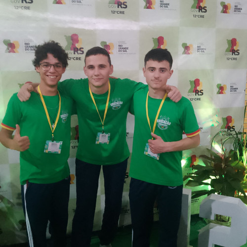
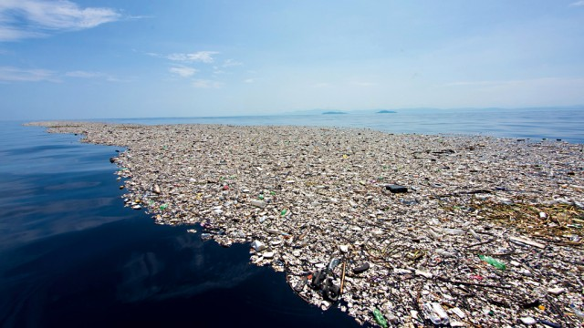
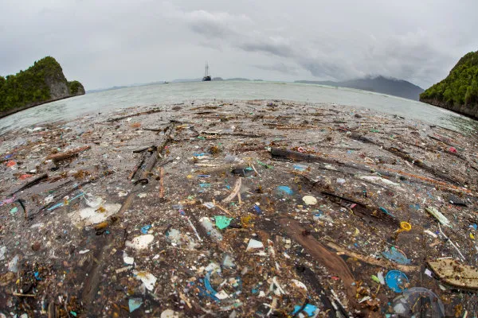
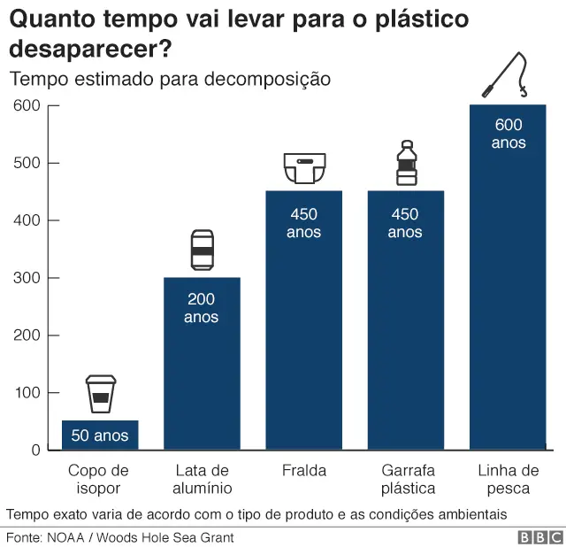
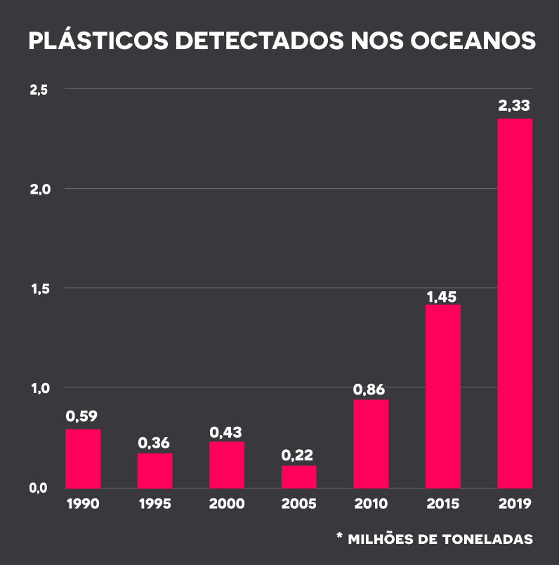

origem
o grupo surgiu no fundamental onde os tres adolescente estavam caticados pela tecnologia, iniciando varios projetos, mas nenhum sendo original, então eles perceberam o real proposito de uma amostra cientifica que não estava em seguir uma formula pronta,mas sim inovar em prol do bem da humanidade, então com esse espirito inovador eles decidiram criar o grupo k.v.p(a sigla é a junção da inicial do sobrenome dos integrantes).
Ariel Kiszewski
engenheiro mecanico do grupo,principal responsavel pelo funcionamento do prótotipo
Lucas Verissimo
engenheiro de software do grupo, principal responsavel pela criação do site e do canal do youtube
Othavio Pinzon
comunicador e editor,principal responsavel pelo plano escrito do projeto e pela comunicação da empresa

Causa
Nós moramos em uma cidade costeira,a ponto de curiosidade a cidade de Tapes é conhecida como a namorada da Lagoa,e por essa razão nos entrestecia proxundamente saber que maior parte das nossas praias eram conhecidas como "sujas" e frequentemente improprias para banho,então decidimos ajudar nossa cidade dando inicio a projetos e protótipos que visam auxiliar a luta contra a poluição da águas
aqui a seguir iremos mostrar dados, estastiicas e vídeos sobre a poluição nos oceano,rio,mar e lagoas.

Fonte da foto:Portal ambiental legal. clique aqui

fonte da foto:Brasil Escola,Poluição marinha. clique aqui

fonte do gráfico: BBC news. clique aqui

fonte do gráfico: Recicla Sampa. clique aqui
soluções
para combater essa poluição nas águas nosso primeiro protótipo original foi criado, intitulado de:Plataforma maritima coletora de lixo autossustentavel. Foi o projeto que abriu portas para o grupo. O projeto se baseia em uma plataforma movida a energia solar capaz de retirar o lixo superficial da água e o lixo coletado seria utilizado para reciclagem, nosso projeto tem foco no custo beneficio e geração de empregos,pois seria necessário pessoas para pilotar a plataforma e para fazer a separação do lixo e o reaproveitamento do plástico.Este projeto seria essencial para o auxilio das cidades ribeirinhas.